Cara Memainkan
-
Pilih Start Game untuk memulai permainan. 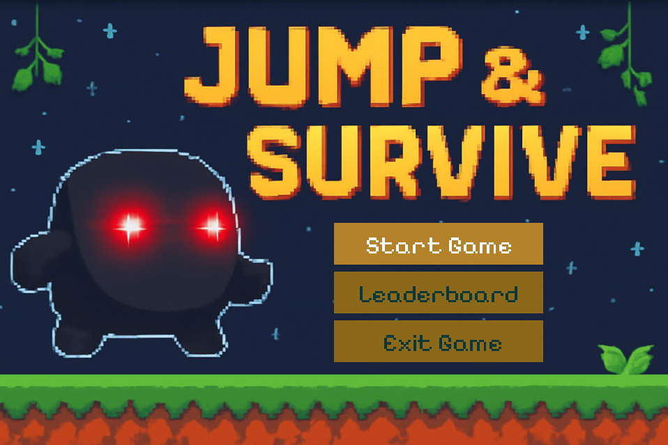
-
Gunakan tombol arah (Arrow Keys) untuk bergerak ke kiri, kanan, dan melompat. 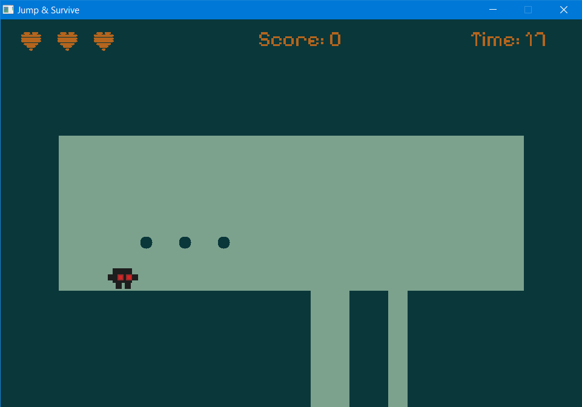
-
Hindari menyentuh void (area kosong di bawah level) dan berbagai jenis rintangan seperti:
- Spike (paku)
- Saw (gergaji statis)
- Moving Saw (gergaji bergerak)
- Fake Coins (koin palsu)
Spike Saw Moving Saw 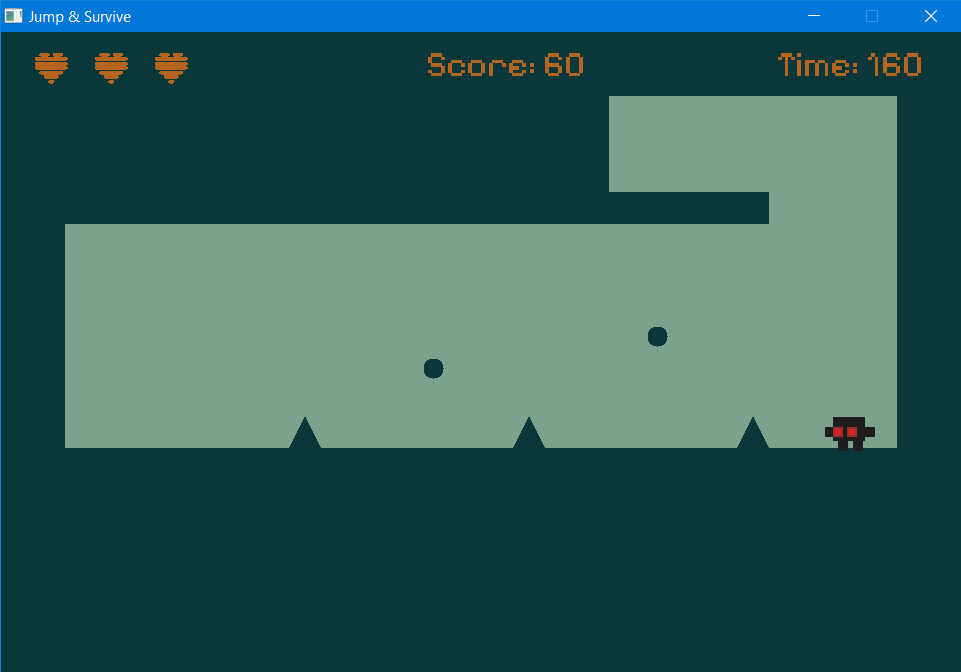 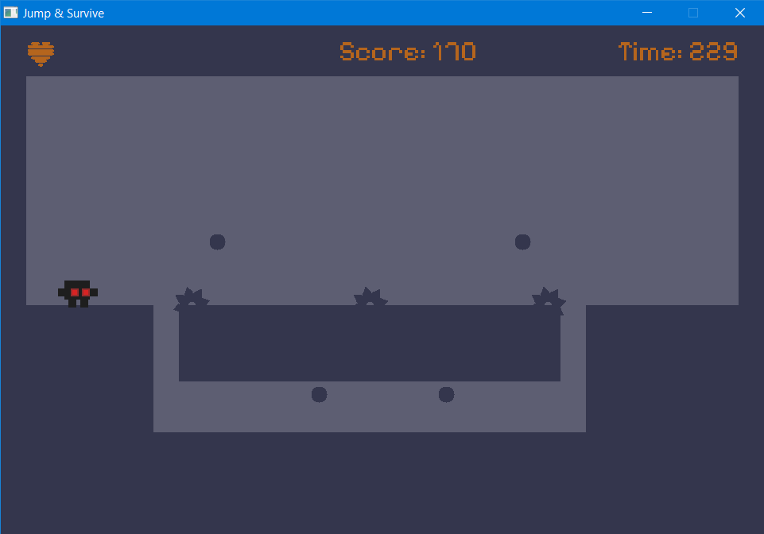 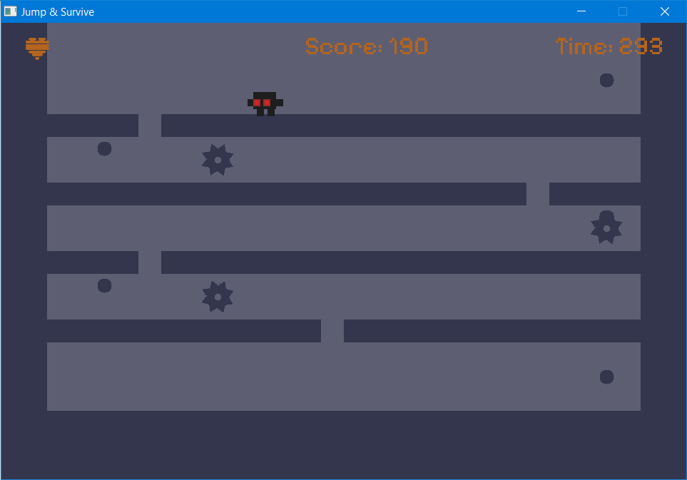 -
Kumpulkan semua koin yang ada di setiap level untuk memunculkan gerbang keluar. 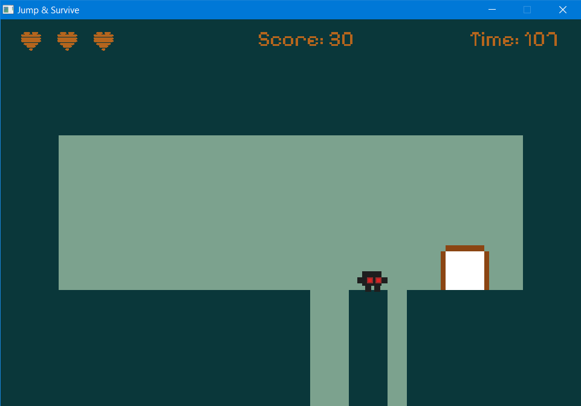
-
Setelah semua koin terkumpul, masuk ke gerbang untuk melanjutkan ke level berikutnya.
-
Jika pemain terkena rintangan atau jatuh ke dalam void, maka:
- Nyawa pemain akan berkurang sebanyak 1.
- Pemain akan kembali ke titik awal (spawn point) di level tersebut.
- Jika nyawa pemain habis, maka akan muncul tampilan Game Over. 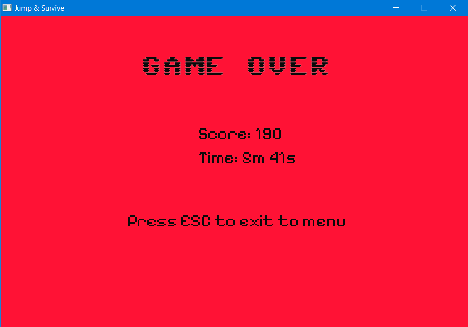
-
Jika pemain berhasil melewati seluruh level dari level 0 hingga level 10, maka akan muncul tampilan Congratulations. 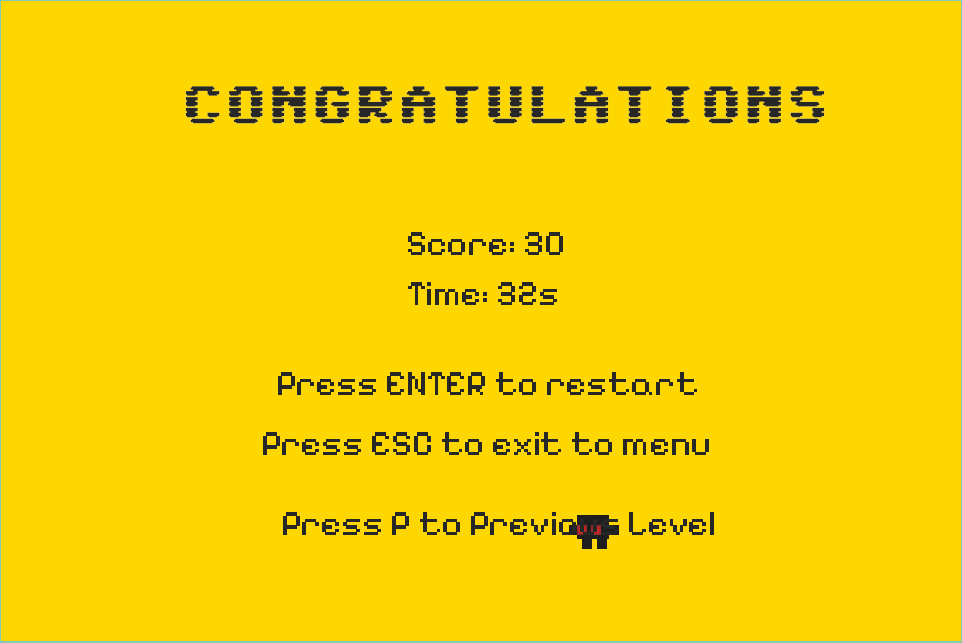
-
Tekan tombol ESC saat berada di dalam game untuk memunculkan menu pause. 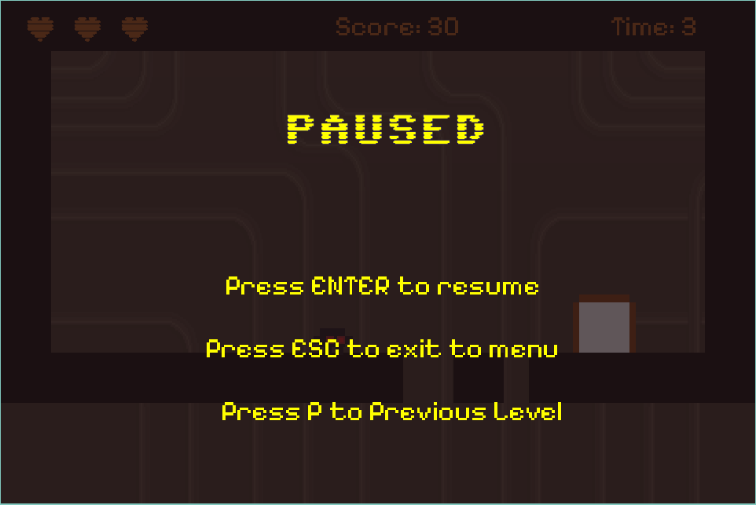
- Tekan tombol ENTER untuk melanjutkan permainan (resume) dari menu pause.
- Tekan tombol ESC sekali lagi saat berada di menu pause untuk kembali ke menu utama.
- Tekan tombol P untuk kembali ke level sebelumnya.
-
Jika permainan game over atau menang, pemain akan diminta untuk memasukkan nama untuk menyimpan statistik permainan ke leaderboard. 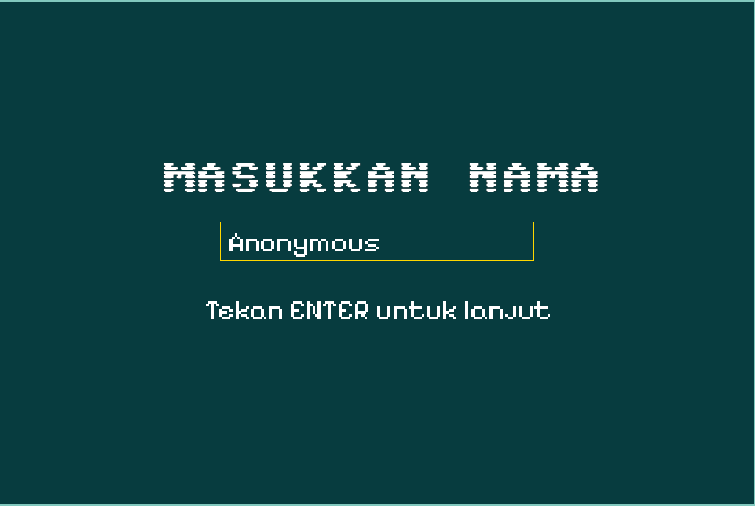
-
Pemain dapat melihat leaderboard setelah memilih pilihan 'Leaderboard' di menu. 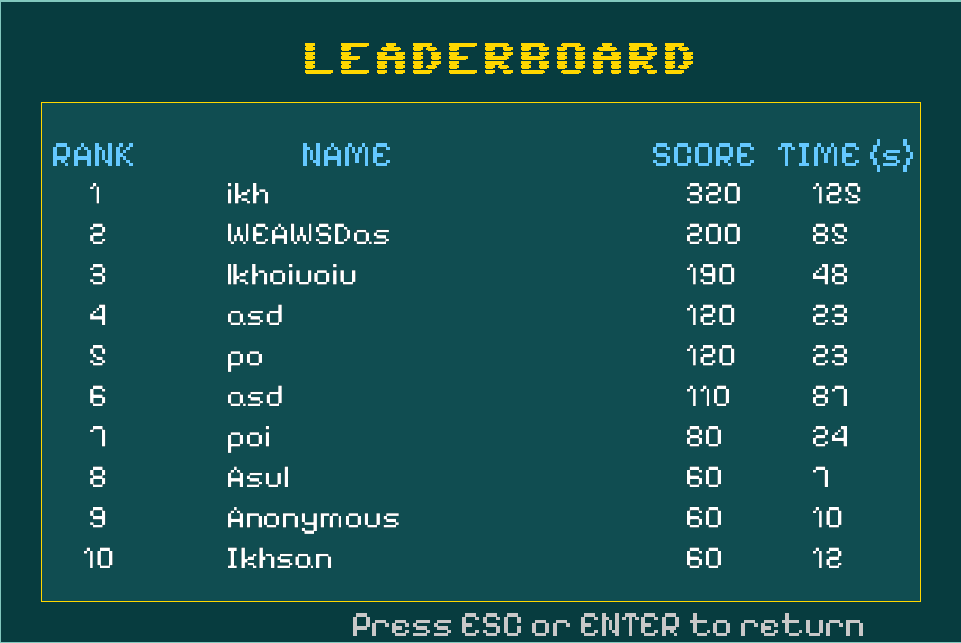